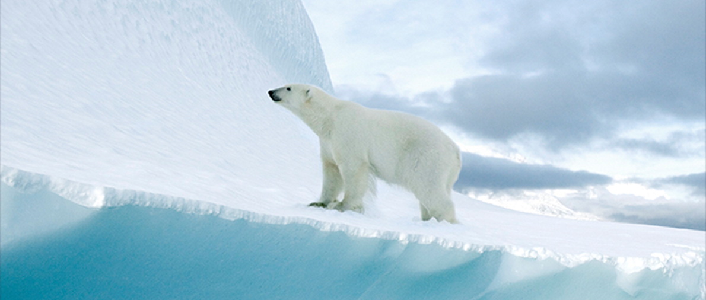

-
Qize
20년 사이 북극 빙하 면적은 몇 % 감소했을까요?
-
- 퀴즈 참여 현황
- 38387명참여
*퀴즈 참여 현황은 매주 업데이트 됩니다
죽은 어미 곁을 떠나지 못하는
북극곰 후원하기최근 20년 사이 북극의 비항 면적은
50%감소
하였습니다
북극은 북극곰의 주 서식자이자 사냥터지만
이 순간에도 녹아 내리는 빙하로 인해 북극곰은 갈 곳을 잃었습니다

빙하가 녹으면 인류 재앙으로 돌아옵니다
지구 온난화로 북극의 온도는 빠르게 상승하고 빙하는 더욱 빠르게 녹아가고 있습니다.
빙하가 무너져 내리는 경고를 결코 무시해서는 안됩니다.
-
- 28조 톤
- 23년 동안 녹은 빙하의 양
1944년~2017년까지 23년동안 녹은 빙하의 양 28조 톤, 해당 동안 해수면 약 3.5CM 상승.
영국 리즈대학교 앤드루 셰퍼드 교수는 "해수면이 1cm 높아질 때 600만명이 터전을 잃는다"라고 했습니다. -
- 27cm
- 앞으로 높아질 해수면
1944년~2017년까지 23년동안 녹은 빙하의 양 28조 톤, 해당 동안 해수면 약 3.5CM 상승.
영국 리즈대학교 앤드루 셰퍼드 교수는 "해수면이 1cm 높아질 때 600만명이 터전을 잃는다"라고 했습니다. -
- 332만명
- 23년 동안 녹은 빙하의 양
1944년~2017년까지 23년동안 녹은 빙하의 양 28조 톤, 해당 동안 해수면 약 3.5CM 상승.
영국 리즈대학교 앤드루 셰퍼드 교수는 "해수면이 1cm 높아질 때 600만명이 터전을 잃는다"라고 했습니다.